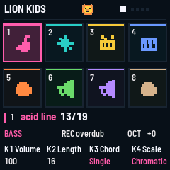
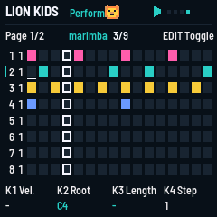
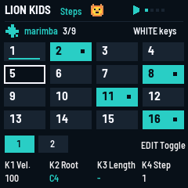
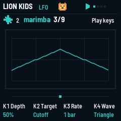

M‑VAVE FM‑1 firmware · Preview 0.0.4
Make a beat.
Make it yours.
LION KIDS turns the FM‑1 into a small groovebox for learning to play, layer loops, and perform. Try it in your browser or install it on your FM‑1.

From first note to full loop
Play drums, synths and sampled instruments on eight tracks. Record as you play, edit individual steps, or use the Performance view to watch the tracks loop together. Add effects and save your music in one of three slots with a pixel-art name.



Each track has its own loop length, so a short drum pattern can repeat under a longer melody. Switch between playing the keys live and editing individual steps. Shape the sound with reverb, delay, the envelope, tempo-synced LFO and Quick Effects. The scale, chord and arpeggiator controls help a few keys fill out a part.
Read the full manualTake your music with you
Connect the FM‑1 by USB to download all three saved slots, render one loop as a WAV, or record a live performance in stereo.
Downloads and source
The FM‑1 build is a community firmware preview. Back up your current firmware’s projects before switching. The installer includes a return-to-stock option.